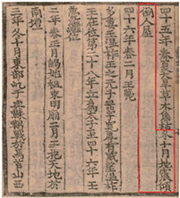
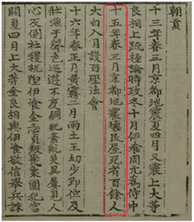
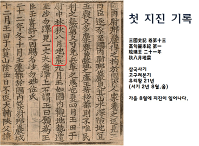
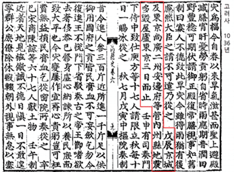

지진상식
역사지진
우리니라는 다양한 역사서에 지진을 기록해 두었습니다.
- 역사지진
- 지진계를 최초로 설치한 1905년 이전까지의 지진을 역사지진이라 말하며, 삼국사기, 조선왕조시록, 일성록, 동국문헌비고 등의 문헌에서 역사지진기록을 확인할 수 있다. 기록에
의한 유감지진은 서기 2~1904년까지 약 1,800회에 달하며, 그 중 인명 및 재산 피해의 기록이 있는 지진은 약 40회 이상 발생한 것으로 나타났다.
삼국사기에는 서기 27년 백제 온조왕 때 “겨울 10월에 지진이 일어나 집이 기울어지고 무너졌다.” 라고 기록되어 있으며, 이 기록이 최초의 지진 피해 기록이다.
또한 서기 779년 통일신라시대 혜공왕 15년 당시, 경주에서 발생한 지진으로 백여명의 백성이 사망했다는 기록이 있다. 고려사에는 경주지역에서 발생한 대표적인 역사지진이 기록되어 있다. 현종 4년(서기 1013년)과 정종 2년(서기 1036년)에 발생한 지진으로, 당시 현종은 “잠의 허물과 잘못으로 변이가 잇달았다. 재앙이 수그러들게 하는 방안을 강구하여 아뢰도록 하라” 라고 말할 정도로 당시 상황이 심각했음을 알려주는 대목이다.
정종 2년에 발생한 지진 기록은 상대적으로 견고하게 지어졌을 기와집과 일반 백성들의 집을 가릴 것 없이 많은 피해가 있었음을 언급하고 있다. 특히 3일동안 지진이 계속되었다는 언급은 여진활동이 지속되었음을 말해준다. (출처: 9.12 지진백서, 대한민국 국가지도집 Ⅱ 2020)

<서기 27년 백제>

<서기 779년 통일신라>

<서기 1013년 경주>

<한반도의 역사지진>